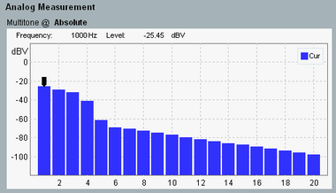
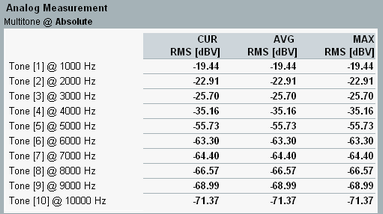

For a multitone measurement, an audio signal comprising up to 20 sine wave test tones is generated, transmitted and analyzed. The frequency and level of each tone is configurable.
You can display the results in a bargraph or alternatively in a table.

The bargraph displays the audio levels measured at the frequencies of the individual test tones. The labels of the individual bars correspond to the numbers of the test tones in the generator settings.
The audio levels can be displayed either as dB values, relative to the level of a selected test tone or as absolute levels. The current setting is displayed at the top. You can configure it via the softkey/hotkey combination "Display Multitone" > "Result Mode" or via the multitone settings of the measurement, see "Result Mode".
To switch between the table view and the diagram view, use the softkey/hotkey combination "Display Multitone" > "View Diagr./Table".
